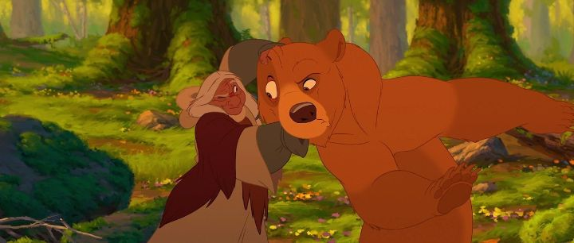

Something must have gone wrong with the marketing of "Brother Bear," Disney's 2D animated film from 2003. I knew about it and saw it, and felt is was especially noteworthy for being set in Canada, my home. We'd gotten Germany, Britain, Brazil, America, Greece, France, China, Hawaii, and now it was Canada's turn. Well, technically Alaska, but the two moose are clearly based on the classic Canadian comedy duo "Bob and Doug McKenzie" (and were even voiced by the original actors). What could be more Canadian than this?! And yet, years later when I lamented Disney's end of 2D animation to a high school art class, no one had heard of "Brother Bear." "It's a classic!" I said, but all I got was confused looks. When I mentioned "The Black Cauldron," a movie that Disney did their best to hide, that got some recognition and people fondly remembering. Perhaps my generation was just a little too old for Disney movies at the time, but it still baffles me that there'd exist a single person in Canada that didn't see the movie. Somehow, Disney's magic was disappearing. "Brother Bear" was also a second attempt at portraying Native-Americans after "Pocahontas," avoid controversy this time by simply telling an original story instead of one based on real people-turned-myth. It's a largely respectful story, even featuring spoken dialogue in a Native language before transitioning to English, and conveying a theme common to Natives in way for all families to understand (I'm not Native, so my assumptions should not be taken seriously). In this story, Kenai is a young teenager with two older brothers, about to be given his sacred totem in a tribal ritual. He's brave but immature, not thinking about the consquences of his actions, and is too eager to become an adult man in the eyes of his peers. The totem he gets is... a bear, the symbol of love, a sign that he must learn to love in order to complete his journey to manhood. He and his brothers seem to misunderstand "it's what you lack rather than what you already are," and Kenai is immediately disappointed for the symbol's meaning, opposed to getting something about strength or courage, you know, something cool.But during a ill-planned hunt for a wild bear that steals the fish they caught, Kenai is saved by eldest brother Sitka, who falls to his death. Not accepting that it was Kenai himself at fault for chasing after the beat to begin with, Kenai vows to kill the bear in revenge. He succeeds, but in a moment of magic to teach him the error of his ways, the Great Spirits transforms him into a bear, and he must journey to the mountains "where the (Northern) lights touch the Earth" to change back. Of course, Kenai has no idea how to live and walk like a bear, and finds help from a hyper-active bear cub Koda, who was separated from his mother on the way to the annual salmon run. During this time, the middle brother Denahi believes Kenai was killed in the conflict, and despite his initial rare wisdom to not avenge Sitka, he vows to hunt down the bear (now Kenai) for his lost family.  The bones of the story are solid. Kenai grows to understand how humans are the real monsters, how he in particular was wrong, and learns to love Koda and the bears as brothers. It's effective and emotional. But it also feels familiar. For example, it shares a lot with "Pocahontas" in the pro-nature theme, and how the other side might not be the "savages" you thought they were. Or more recently, "The Emperor's New Groove," which also featured a self-centered protagonist that's transformed into an animal to learn a life lesson. "Brother Bear" also doesn't feature many plot twists to keep the viewer's attention. It meanders at a casual pace, taking time to enjoy the beauty of the forest and the cave paintings, or to hear the funny banter between the background animal characters. Thankfully, the characters do a good job selling it. Jeremy Suarez, a child actor at the time, was fantastic in the role of Koda, the overly-talkative and annoying, yet lovable, little brother to Kenai's bear form. Of course, Rick Moranis and Dave Thomas as the moose named Rutt and Tuke are excellent. The now famous Joaquin Phoenix played the lead in Kenai, and he was fine, although I think the character's personality on the script was a bit frustrating (he outgrows his worser tendencies by the end of the movie). By the time we see all the other bears at the salmon run, we get a ton of other guest actors, who all seem to be superfluous and simply used to extend the cast and runtime. Phil Collins returned to provide the music after his success with "Tarzan," but while all of the songs in the prior movie were excellent, the songs in "Brother Bear" are much less memorable (while still fun in their own right, and fitting well with the road-trip-with-a-wilderness-backdrop setting). Notably, he doesn't sing all of the songs himself this time. The visuals and animation quality are strong, and this was clearly meant to be a showcase of classical animation like "Treasure Planet" and "Tarzan" before it, but there's only so much you can do with endless forests. The most notable aspect of the visuals might be change in aspect ratio when Kenai transforms from human to bear, like the monochrome to color change in "The Wizard of Oz." As a side-note, the home-video-sequel "Brother Bear 2" manages to maintain animation quality almost as strong as the original movie, which was very unusual for the secondary animation team; this might suggest that the style in "Brother Bear" wasn't as grand as one might think, but take that as you will."Brother Bear" might not be an all-time classic compared to the rest of the Disney canon, and I might have a stronger bias because of it's Canadian roots. But it's safe to say that this is one of the most underrated animated films from Disney. If you missed it completely, it's worth going back to revisit it. If you have the Bluray or DVD, you can even watch it a second time with Rutt and Tuke's in-character audio commentary. Beauty, eh?
- "Ani" More reviews can be found at : https://2danicritic.github.io/ Previous review: review_Boy_and_the_World Next review: review_Btooom!